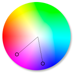

Мой Справочник | CSS3 | Фото-фильтры
| drop-shadow(); | ||
|---|---|---|
|
Отбразываемая тень от изображения 4 параметра: смещение по oX, смещение по oY, размытие, цвет |
filter: drop-shadow(10px 10px 1px deeppink); |

|
| Отбразываемая тень от текста |
filter: drop-shadow(5px -3px 0px black); |
Some text Some text Some text |
| Множественная тень |
filter: drop-shadow(5px -3px 0px black) |
Some text |
| brightness(); | ||
| Яркость (100% по ум*) |
filter: brightness(50%); |
|
| contrast(); | ||
| Контраст (1 по ум*) |
filter: contrast(0.5); |
|
| grayscale(); | ||
| Обесцвечивание (0 по ум*, 1 - полное обесцвечивание) |
filter: grayscale(0.5); |
|
| sepia(); | ||
| Сепия (0 - 1) |
filter: sepia(0.5); |
|
| invert(); | ||
| Инверсия цвета (0 - 1) |
filter: invert(0.3); |
|
| saturate(); | ||
|
Насыщенность цвета (0 - 1) seturate(0) аналог grayscale(1) |
filter: saturate(0); |
|
| hue-rotate(); | ||
| Поворот по цветовому кругу (0-360deg)  |
filter: hue-rotate(180deg); |
|
| blur(); | ||
| Размытие в px |
filter: blur(5px); |
|
| opacity(); | ||
|
Прозрачность (0 - 1) 1 - по ум* |
filter: opacity(0.5); |
|
| Множественный фильтр | ||
| Перечисляются друг за другом через пробел |
filter: opacity(0.9) blur(2px) contrast(3)
sepia(0.2);
|
|